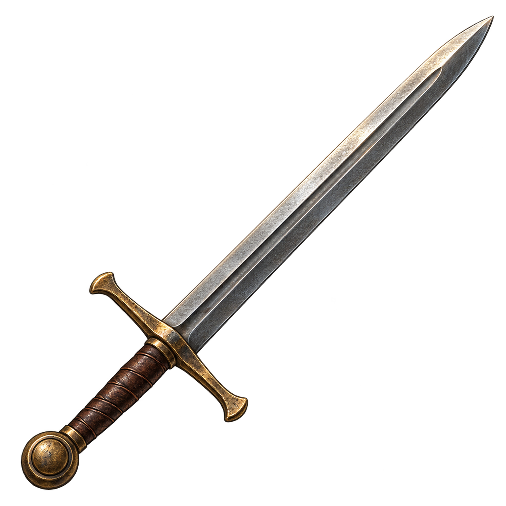

Règles et fonctionnement
Catalogue des objets
Retrouver les objets officiels et comprendre les limites du catalogue.
Comprendre ce que cela implique
Le catalogue illustré présente les caractéristiques des équipements par famille et distingue les reliques royales des acquisitions ordinaires. Les autres objets sont décrits par leur usage.
Les huit emplacements actuels sont conservés. Jambes et pieds constituent un seul emplacement. Une référence existante ne garantit ni une offre ni une récompense dans chaque scénario.

Dans cet article
Détails de référence
Texte de référence mis en forme et conservé dans l’historique de cet article. Les paragraphes datés peuvent décrire une évolution ou une étape antérieure.
Le catalogue illustré regroupe les 88 équipements ordinaires, les huit reliques royales et les autres références officielles du jeu. Les tableaux donnent les caractéristiques vérifiées dans les définitions du moteur : emplacement, classes autorisées, rareté, bonus, nombre de mains, prix de base et quota pour les acquisitions ordinaires.
Lire les valeurs
Les bonus s’ajoutent aux statistiques du héros. Un malus est conservé dans les tableaux. Les illustrations représentent les objets du jeu et ne leur ajoutent aucun pouvoir. Le prix est le prix de base, avant les conditions de vente du recéleur. Le quota mondial porte sur les nouvelles émissions ordinaires, pas sur les exemplaires historiques déjà présents.
Emplacements
Huit emplacements : tête, cou, corps, main principale, main gauche, pieds et deux accessoires. Jambes = pieds : bottes, chausses, grèves et jambières se remplacent dans ce même emplacement. Aucun emplacement supplémentaire et aucune rareté légendaire ne sont ajoutés.
Disponibilité
Les reliques royales sont séparées des tirages ordinaires. Les objets de quête, documents, spécialistes et personnages dépendent du scénario et des interactions disponibles. Le catalogue ne crée pas de nouvelles offres. Les objets personnalisés et identifiants dynamiques d’une partie ne constituent pas une liste finie et ne figurent pas dans les tableaux des références officielles.
Voir les règles d’équipement pour les sources d’acquisition, la fabrication, les incompatibilités et les quotas.